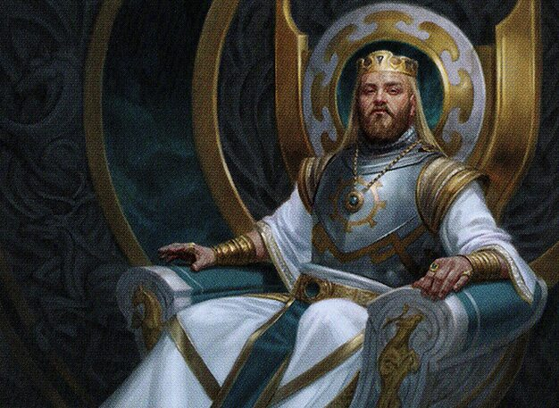

Kinnan, Bonder Prodigy
Below average
The deck wins 19% of its games – the average at a four-player table is 25%.
Limited meaning: the Forge AI can not play many cards, or only weakly (see note below).
- Tier · Elo
- C 1365 #57 of 64 in the rankings up to €1,500
- Win rate
- 19% 30 wins in 160 games, 90% certain between 14 and 24%
- Placements
- 120%8×
- 220%8×
- 325%10×
- 435%14×
Create a new deck there and paste the list when importing.
- Price
- €1,250.75of €1,500.00
- Games
- 160in 16 tournaments
- Cards
- 10036 lands, 16 basic
- Game Changer
- 3at most 3 allowed
- Combos
- 3complete in the deck
- Rules check
- Passed100 cards, colors, banlist
AI note: the Forge AI can't play 8 cards of this deck (replaced with similar cards in the Forge games) and plays 9 more only partially well. This result is therefore much less meaningful – the real deck may be stronger or weaker. Affected cards
At most €1,500 including the commander. If prices rise above that, the shopping list is rebuilt automatically.
Strengths and weaknesses
From 120 analysed games in 12 tournaments (with the lists played in the tournament). Games that hit the time limit don't count, just like in the rankings. Values in brackets: average of all decks in the same price class. Hover over or tap a point to see the exact numbers.
Play style: wins through combat – 100% of the damage to opponents is combat damage · How it wins: 17% of wins by surviving (knocked out at most one opponent itself, the others took each other out) – all-deck avg: 35%
Strengths
- Often wins by combo trendin 19 of 24 wins all pieces of a combo were in play
Weaknesses
- Often eliminated first clearin 43% of games (all-deck avg: 25%) · 52 of 120 games
Who it beats
Win rate at tables where this commander played too – only opponents in the current rankings with at least 20 shared games. The average at a four-player table is 25%.
Often beats
 26%of 23
26%of 23
26%of 27 24%of 25
24%of 25
Struggles against
 16%of 31
16%of 31 17%of 24
17%of 24 19%of 31
19%of 31
Play style
ComboRamp
Number of cards per role – avg is the average of all tested decks (line in the bar).
Compare with another commander
Commander (1)
- Kinnan, Bonder ProdigyCombo€12.24
Creatures (25)
- Badgermole Cub RampCombo€50.46
- Wan Shi Tong, Librarian Card draw€39.51
- Delighted Halfling C RampCombo€20.94
- Nyxbloom AncientCombo€18.91
- Thrasios, Triton Hero Card draw€16.68
- Bloom Tender C RampCombo€13.26
- Faerie Mastermind C Card draw€11.34
- Shang-Chi, Master of Kung Fu Ramp€10.20
- Enduring Vitality Ramp€9.47
- Wandering Archaic // Explore the Vastlands€8.97
- Nezahal, Primal Tide Card draw€8.09
- Spellskite€6.82
- Hullbreaker Horror InteractionCombo€5.28
- Endurance€4.94
- Valley FloodcallerCombo€4.35
- Birds of Paradise B Ramp€3.00
- Fyndhorn Elves Ramp€2.71
- Clever Impersonator€2.63
- Phyrexian Metamorph€2.52
- Elvish Spirit Guide D Ramp€1.48
- Incubation Druid RampCombo€1.41
- Tidespout Tyrant InteractionCombo€1.02
- Elvish Mystic Ramp€0.65
- Trophy Mage€0.53
- Llanowar Elves C Ramp€0.21
Planeswalkers (1)
- Tezzeret the SeekerAI weak€12.21
Battles (1)
Instants (14)
- Fierce Guardianship B InteractionGame Changer€54.55
- Force of Negation B Interaction€48.70
- Mana Drain Interaction€44.81
- Swan Song Interaction€12.63
- Pact of Negation InteractionAI can't play€12.31
- Chain of Vapor Interaction€7.44
- Sink into Stupor // Soporific Springs€7.03
- Mindbreak TrapAI can't play€6.26
- Mental Misstep C Interaction€6.22
- Chord of Calling€4.36
- Flusterstorm D Interaction€3.84
- An Offer You Can't Refuse B Interaction€3.42
- Veil of Summer D ProtectionAI weak€3.16
- Retraction Helix InteractionComboAI can't play€0.31
Sorceries (4)
- Finale of Devastation€26.17
- Green Sun's Zenith€14.03
- Nature's Rhythm€5.41
- FabricateAI weak€4.14
Artifacts (13)
- Mox Opal RampComboAI weak€144.54
- Chrome Mox RampGame Changer€82.54
- Mox Amber B RampCombo€62.20
- Lotus Petal C RampAI weak€24.22
- Basalt Monolith RampComboAI weak€2.77
- Moonsilver KeyAI weak€1.03
- Sol Ring B RampCombo€0.75
- Fellwar Stone A Ramp€0.69
- Springleaf Drum RampAI can't play€0.38
- Arcane Signet B Ramp€0.37
- Talisman of Curiosity Ramp€0.28
- Simic Signet Ramp€0.20
- Mirage MirrorAI can't play€0.16
Enchantments (5)
- Rhystic Study B Card drawGame Changer€36.96
- Sylvan Library Card drawAI can't play€23.42
- Mystic Remora C Card drawAI weak€9.52
- Pemmin's Aura ProtectionCombo€4.87
- Freed from the RealComboAI can't play€4.16
Lands (36)
- Boseiju, Who Endures€43.89
- Gemstone CavernsAI can't play€36.68
- Scalding Tarn€28.19
- Misty Rainforest€25.99
- Mana Confluence€24.89
- Verdant Catacombs€24.80
- Otawara, Soaring City€24.21
- Polluted Delta€18.51
- Minamo, School at Water's EdgeAI weak€17.34
- Wooded Foothills€16.67
- Flooded Strand€15.22
- Windswept Heath€10.52
- City of Brass€8.73
- Breeding Pool€6.76
- Rejuvenating Springs€3.86
- Treasure Vault€1.84
- Waterlogged Grove€0.54
- Yavimaya Coast€0.42
- Exotic Orchard€0.20
- Command Tower€0.16
- 7× Forest
- 9× Island
Draw an opening hand
Seven random cards from this deck – to get a feel for the start. As in a real game, the commander is not in the library.
Combos in the deck (3)
Detected from the decklist (Commander Spellbook): theoretically possible, see Spellbook for requirements. Whether a combo actually came together in games is shown in the “Games” tab.
- Kinnan, Bonder Prodigy + Freed from the Real → Infinite blue mana, Infinite colorless mana, Infinite non-blue mana of colors among permanents you control
Example – 14 versions with these cards: Freed from the Real · Pemmin's Aura · Kinnan, Bonder Prodigy · Nyxbloom Ancient · Basalt Monolith · Bloom Tender · Incubation Druid · Delighted Halfling and 1 more - Hullbreaker Horror → Infinite storm count, Infinite colorless mana, Infinite creature ETB
Example – 6 versions with these cards: Hullbreaker Horror · Tidespout Tyrant · Sol Ring · Mox Amber · Mox Opal - Valley Floodcaller + Retraction Helix + … → Infinite storm count, Infinite untap of some creatures you control, Infinite power and toughness for certain creatures until end of turn
3 versions, each with one of: Sol Ring · Basalt Monolith
Commander Spellbook lists 23 entries because every version counts separately (for example with a different sacrifice outlet). Here each combo counts once.
Show all 23 entries
- Hullbreaker Horror + Sol Ring → Infinite colorless mana, Infinite storm count
- Hullbreaker Horror + Mox Amber → Infinite creature ETB, Infinite creature LTB, Infinite colored mana
- Kinnan, Bonder Prodigy + Basalt Monolith → Infinite colorless mana
- Tidespout Tyrant + Sol Ring → Infinite colorless mana, Infinite storm count
- Valley Floodcaller + Retraction Helix → Infinite storm count, Infinite untap of some creatures you control, Infinite power and toughness for certain creatures until end of turn
- Valley Floodcaller + Retraction Helix + Sol Ring → Infinite storm count, Infinite untap of some creatures you control, Infinite power and toughness for certain creatures until end of turn
- Bloom Tender + Freed from the Real → Infinite non-blue mana of colors among permanents you control, Infinite mana of colors among permanents you control
- Kinnan, Bonder Prodigy + Freed from the Real → Infinite blue mana, Infinite mana a specific creature can produce, Put most creature cards from your library onto the battlefield
- Basalt Monolith + Nyxbloom Ancient → Infinite colorless mana
- Bloom Tender + Pemmin's Aura → Infinite non-blue mana of colors among permanents you control, Infinite mana of colors among permanents you control
- Incubation Druid + Freed from the Real → Infinite mana lands you control can produce
- Tidespout Tyrant + Mox Amber → Infinite storm count
- Kinnan, Bonder Prodigy + Pemmin's Aura → Infinite blue mana, Infinite mana a specific creature can produce, Put most creature cards from your library onto the battlefield
- Tidespout Tyrant + Mox Opal → Infinite storm count
- Kinnan, Bonder Prodigy + Delighted Halfling + Freed from the Real → Infinite colored mana that can only be spent to cast legendary spells
- Incubation Druid + Pemmin's Aura → Infinite mana lands you control can produce
- Nyxbloom Ancient + Freed from the Real → Infinite blue mana, Infinite mana creatures you control can produce
- Valley Floodcaller + Retraction Helix + Basalt Monolith → Infinite storm count, Infinite untap of some creatures you control, Infinite power and toughness for certain creatures until end of turn
- Kinnan, Bonder Prodigy + Delighted Halfling + Pemmin's Aura → Infinite colored mana that can only be spent to cast legendary spells
- Nyxbloom Ancient + Pemmin's Aura → Infinite blue mana, Infinite mana creatures you control can produce
- Badgermole Cub + Freed from the Real → Infinite green mana
- Badgermole Cub + Pemmin's Aura → Infinite green mana
- Hullbreaker Horror → Infinite creature LTB, Infinite creature ETB, Infinite storm count
Adjusted for the Forge AI
The list above is the best tested version, the way you would play it in real games. The Forge AI can't play a few cards – they were replaced in the tournament (the deck builder also rearranges other slots within the budget). The win rate comes from games with these replacements; the original cards themselves were not tested by the AI.
- Chrome Mox: adjusted to make room for another replacement
- Exotic Orchard: adjusted to make room for another replacement
- Freed from the Real: AI can't play it
- Gemstone Caverns: AI can't play it
- Mana Drain: adjusted to make room for another replacement
- Mindbreak Trap: AI can't play it
- Mirage Mirror: AI can't play it
- Pact of Negation: AI can't play it
- Retraction Helix: AI can't play it
- Rhystic Study: adjusted to make room for another replacement
- Springleaf Drum: AI can't play it
- Sylvan Library: AI can't play it
- Cephalid Coliseum: replacement
- Colossal Skyturtle: replacement
- Consecrated Sphinx: replacement
- Dispel: replacement
- Dramatic Reversal: replacement
- Drift of Phantasms: replacement
- Force of Vigor: replacement
- High Fae Trickster: replacement
- Into the Flood Maw: replacement
- Mirrormade: test
- Seedborn Muse: replacement
- Tropical Island: replacement
The games in numbers
- Commander cast
- 100%of games, by turn 4 in 88%
- Damage per game
- 30average: 29
- Wins on average
- turn 12.3own turn, average: 11.6
- First one out
- 43%52 of 120 games, average: 25%
- Too few lands
- 8%of games, 1 of them won, average: 8%
- Mulligans
- 9%11 in 120 games, average: 10%
Cards with a measurable effect
A correlation, not proof: these cards were cast clearly more often in wins.
- Seedborn Muse – won 54% of the games in which it was cast (13), otherwise 16%
- Force of Negation – won 38% of the games in which it was cast (34), otherwise 13%
- Birds of Paradise – won 38% of the games in which it was cast (34), otherwise 13%
What the games show
From 120 analysed games in 12 tournaments (with the lists played in the tournament). Games that hit the time limit don't count, just like in the rankings. Values in brackets: average of all decks in the same price class. “clear”: well supported. “trend”: showing up, but not yet certain.
Damage per game all games
Total damage to opponents ÷ all 120 games – what the card contributes over the whole test
- Tidespout Tyrant avg 3.8hit in 33 of 120 games
- Hullbreaker Horror avg 3.3hit in 28 of 120 games
- Nezahal, Primal Tide avg 3.0hit in 26 of 120 games
Damage when used when it hits
Total damage ÷ games in which the card dealt damage – its strength when used
- Void Winnower avg 16.6hit in 14 of 120 games
- Hullbreaker Horror avg 14.1hit in 28 of 120 games
- Nezahal, Primal Tide avg 13.9hit in 26 of 120 games
Top finishers eliminates opponents
Cards that most often knocked an opposing commander out of the game
- Tidespout Tyrant 23×120 games in deck
- Nyxbloom Ancient 12×120 games in deck
- Hullbreaker Horror 8×120 games in deck
Best interaction answers threats
Opposing cards destroyed, exiled, bounced or countered when this card resolved (tokens excluded)
- Rhystic Study 28×avg 0.3 per game · 100 games in deck
- Mystic Remora 20×avg 0.2 per game · 120 games in deck
- Hullbreaker Horror 19×avg 0.2 per game · 120 games in deck
Biggest walls blocks the most
Opposing cards that blocked this deck's attackers most often – 14% of 1937 attackers blocked in total, 11% of those by flyers or reach
- Thopter Token 9×blocked in 3 games
- Esper Sentinel 7×blocked in 7 games
- Ragavan, Nimble Pilferer 5×blocked in 5 games
Rarely cast candidates to cut
Cards in this list that were cast least often in their games – often too expensive or too slow (lands excluded)
- Elvish Spirit Guide 9%cast in 11 of 120 games
- Mental Misstep 11%cast in 13 of 120 games
- Flusterstorm 12%cast in 14 of 120 games
Wins by turn speed
On which own turn the 24 wins came
- by turn 70%
- turns 8–98%
- turns 10–1138%
- turns 12–1329%
- turn 14+25%
Combos in play clear Hullbreaker Horror + Sol Ring: all pieces cast in 12 games, 6 won · Hullbreaker Horror + Mox Amber: all pieces cast in 17 games, 5 won · Kinnan, Bonder Prodigy + Basalt Monolith: all pieces cast in 57 games, 16 won · Tidespout Tyrant + Sol Ring: all pieces cast in 10 games, 4 won
Elo history
Elo after every tournament, oldest on the left. Dashed: tier limits S, A, B, C.
Now 1365, highest 1443 (11/10), lowest 1365 – from 16 tournaments.
Recent games
Place in every 4-player game, oldest on the left: gold = win, silver = 2nd, bronze = 3rd, red = 4th, ring = draw.
2344111331214243434424234314434222443131In the last 40 games 8× win, 8× 2nd, 10× 3rd and 14× 4th.
Mana curve without lands
Average 2.35
Roles in the deck
Count / target from the EDHREC average deck (the line), red means clearly below. Strategy: the remaining cards without one of these roles, such as the creatures and effects the deck is built around. 63 non-land cards in total.
Card types
- Creatures25
- Planeswalkers1
- Battles1
- Instants14
- Sorceries4
- Artifacts13
- Enchantments5
- Lands36
Most expensive cards
What the program has learned
Each tournament the deck tests one card. A verdict needs at least 40 games with and without the card. Since the deck is rebuilt every tournament with current prices and data, tested cards can drop out again later.
- no clear difference Into the Flood Maw instead of Colossal Skyturtle · win rate 21% with, 15% without (100 / 60 games) · from an earlier version, not in the deck now
- no clear difference Mockingbird instead of Dramatic Reversal · win rate 16% with, 20% without (50 / 110 games) · from an earlier version, not in the deck now
- no clear difference Dispel instead of Force of Vigor · win rate 18% with, 20% without (80 / 80 games) · from an earlier version, not in the deck now
3 more tested cards are still collecting games.
Shopping list for Cardmarket
Copy the list, create a new list under “Wants” on Cardmarket and paste it.
Total €1,250.75 Cardmarket average as of Nov 27, 2026
Open Cardmarket WantsPrices without shipping. Individual cards may have become cheaper or more expensive on Cardmarket.
Played by the Forge AI, four players per game. An average deck wins 25%. How are decks tested?